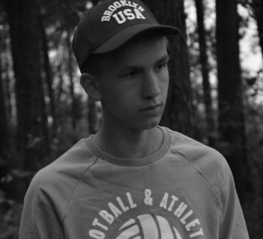

Gromiko Artem
ica-e@mail.ru | +375 44 743-734-1
Summary
I do not have enough experience in front-end development, but every day I spend a lot of time learning new / strengthening knowledge in the already studied technologies. I am goal-oriented and ready to quickly learn and apply what I have learned on real projects.
Skill
- JS, html, css, scss, gulp
- Medium/basic knowledge of sql/mysql, php
- Understanding OOP,MVC
Sample of code
SampleProfessional Experience
- Learn.javascript tasks
- Codecademy/Htmlacademy
- Labs from college
- use Yandex map API to create a map with places accessible to people with disabilities for the final of the competition 100 ideas for belarus [click]()
Education
- 1984-1991 Minsk Radio Engineering College
- Dozens of different webinars
English
Listening | Teds lectures | Translation of texts | exercises in Lingualeo
Level: A2f